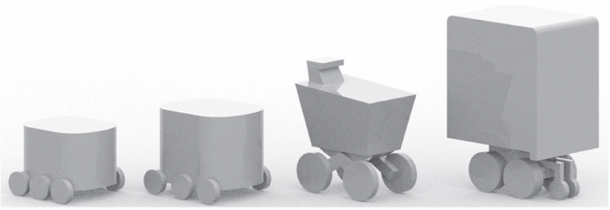

Intelligent Transport Systems – Public-area mobile robots (PMR) – Part 1: Overview of the paradigm
ISO/TR 4448-1 · Published 2024 · 24 pages
This Extract does not replace the technical standard itself; it is only informative material about the standard.
Introduction
In 2023, there are several hundred companies around the world – mostly start-ups – engaged in the development of small, remote-controlled and sometimes partially automated devices for operation on city sidewalks and cycle paths. Thousands of small retailers and dozens of delivery companies use these systems for last-mile delivery. Already, many more cities have a small number of such PMRs than robotic taxis in pilot operation. This means that cities are likely to face PMR regulation requirements much sooner than the regulation of robotic cars and trucks is expected.
Note: This Extract presents selected clauses of the described document and retains the original clause numbering.
Use
The described document serves as a first introduction to the issue of mobile robots in public space and is intended for all those who deal with the issue, i.e. both at the level of the Ministry of Transport of the Czech Republic and local governments or operators of such systems or robot manufacturers. The document does not set any requirements, it only outlines areas that should be standardized.
Related Documents (Selection)
The document described refers to only one ISO/TS 14812, which is the normative ITS dictionary.
Scope
This document provides an overview of the ground-based automated mobility systems deployment paradigm. The paradigm covers such curbsides and pathways as are suitable for co-temporal, collaborative use by various types and combinations of automated and non-automated, wheeled, or ambulatory, motorized and non-motorized, mobility-related vehicles and devices as well as for various levels of automated or remote operation of such vehicles. This includes vehicles and devices that move people as well as goods within proximate distances of human bystanders.
Note: Aerial (flying) drones are not part of the scope.
3 Terms and definitions
This part of the technical standard defines 14 terms, the most important of which are the following:
delivery robot – a robotic vehicle used to deliver goods, food, and other items, often for “last mile” applications
Note 1 to the entry: Although the word “drone” is correctly used to describe a robot on wheels, this document uses the term “robot” and the specific abbreviation PMR
pathway – infrastructure designed to permit the movement of various combinations of active transportation users and public-area mobile robots (PMRs) within the same space, including outdoor footways, cycleways, crosswalks, road shoulders, trails and indoor passageways, corridors or hallways
(Note: It usually forms a network of pathways.)
public-area mobile robot (PMR); (ground) automated mobile systems in public space (PMR) – wheeled or legged (ambulatory) ground-based device that is designed to travel along public, shared, active transportation pathways without the use of visible human assistance or physical guides
Note 1 to entry: Physical guides include rails and curbs. Note 2 to entry: While the term public-area mobile robot (PMR) excludes devices with visible human assistance, a PMR can be teleoperated by a human. Note 3 to entry: While the term “PMR” excludes devices with visible human assistance, PMRs can carry humans as passengers, e.g. an automated wheelchair. Note 4 to entry: While the term “PMR” excludes devices with visible human assistance, PMRs can be electronically tethered to follow a human.
robotaxi – vehicle with an automated driving system (ADS) that is configured to perform the entire dynamic driving task (DDT) throughout its operational design domain (ODD) for the purpose of a for-hire passenger service
Note 1 to entry: This is a form of ADS-DV (Automated Driving System – Dedicated Vehicle) defined in SAE J3016 202104. EXAMPLE Remotely monitored automated taxi.
4 Abbreviations
This clause lists 12 abbreviations from the field of mobile robots in public space, the most important of which are the following:
ADS automated driving system
DDT dynamic driving task
IoT internet of things
PMR public-area mobile robot, ground-based automated mobile system in public space
PUDO pickup and drop off
VRU vulnerable road user
Other terms and abbreviations from the ITS domain can be found in the ITSTerminology dictionary (www.itsterminology.org), the StandardLand website (www.standardland.cz) or the OBP platform (www.iso.org/obp).
5 Purpose and justification
Clause 5 is 1.5 pages long and explains the general reasons for standardization, reasons related to traffic safety, planning, commercial use, operational and also legal requirements and insurance.
6 Parts outline
Clause 6 is 4 pages long and elaborates on the necessary steps that the standardization of this new area of transport requires. The first step is the nomenclature and definition of data, including the subsequent handling of data, the second step is the standard options for the robot’s behavior and the related topic of security, then the level of readiness of the city for the deployment of such a service is also described, as well as the need for personal assistance. For example, for the definition of behavior, the document also lists 4 main cases: boarding/exiting/loading/unloading from a mobile robot by the curb, the robot’s access to zones where people are moving, the behavior of the robot in these zones, and the robot’s communication methods when interacting with a human. As part of the city’s readiness for the deployment of such a service, the quality of the given network of paths for the movement of robots, the movement of robots in extreme weather, the resolution of accident situations and the supervision of proper maintenance of robots, e.g. in the resolution or updating of map data, is described on half a page.
7 Context
Clause 7 is 10 pages long and describes the reasons why standardization is necessary. Subclause 7.1 discusses the comparison of robotic vehicles and delivery robots in terms of quantity and timing of deployment, with standardisation of these means being more urgent.

Figure 1 — Example of PMR forms for the distribution of small packages (Source. Urban robotics foundation)
Subclause 7.2 describes the need to create a safe space in the public space of the city, where such systems could move, the majority of which is devoted to safety aspects and also to lower operating costs than those associated with robo-vehicles.
Subclause 7.3 deals with challenges such as common obstacles on the infrastructure/pavement, such as garbage cans, parked vehicles, stored building materials or evicted furniture, fallen tree branches or bushes growing into the road, places where the pavement ends or poor quality of the pavement surface. At the same time, it also lists 12 issues that need to be solved by regulation:
-
pedestrian and cyclist safety and rights-of-way;
-
requirements for infrastructure dimensions (related to accessibility regulations);
-
PMR speeds, dimensions, weights (maximums and minimums);
-
equipment such as brakes, lights, speakers, mics, reflectors, signage (decals);
-
device identification and its visibility for enforcement;
-
areas and hours of operation, especially avoiding certain zones such as schools;
-
PMR behaviour regarding accessibility (e.g. distance-keeping, blocking ramps or entrance ways);
-
audible signals emanating from a PMR such as their loudness and meaning;
-
requirements to alert other users of PMR presence (sounds, lights, flags);
-
requirements to recognize and respond to sounds such as emergency vehicle sirens;
-
enforcement and penalties;
-
liability and insurance.
8 Operating principles for PMRs
Operating and deployment standards for operations in shared human-social environments should establish general rules for PMRs across various types of pathways used by active transportation users of all abilities.This clause contains two subclauses. 8.1 Contrasting types of infrastructure (contrasting pathway, curb, cycleways and footway). 8.2 Behavioural factors contains Table 1: Factors that can influence the acceptance and workability of PMRs, where many important factors for the behavioural aspects for PMRs are listed and described.
9 Governance principles for PMRs
Clause 9 contains two subclauses. In 9.1. General explains on 1 page general governance principles for PMRs. It also states that the ISO 4888 series is designed to maintain neutrality by providing the essential data and procedures needed and its structure enables legislators to tailor the standards to local governance needs while ensuring that relevant rules can be clearly communicated to roboticists, operators of automated systems, and end users. Second subclause describes 9.2 Similarities between PMRs and wheeled, human-assistive devices.
10 Environmental and social considerations
Clause 10 on 1.5 pages describes 10.1 Environmental (climate and weather) resilience certification and 10.2 Social considerations.
11 Use cases
This Clause contains Table 2 – Selection of use cases for PMRs, which includes a description of 12 current scenarios of use cases.
The Bibliography
Provides 4 references to the parking data model, the taxonomy of autonomous transport and two articles on robotaxis and the transformation of public space with the advent of mobile robots.